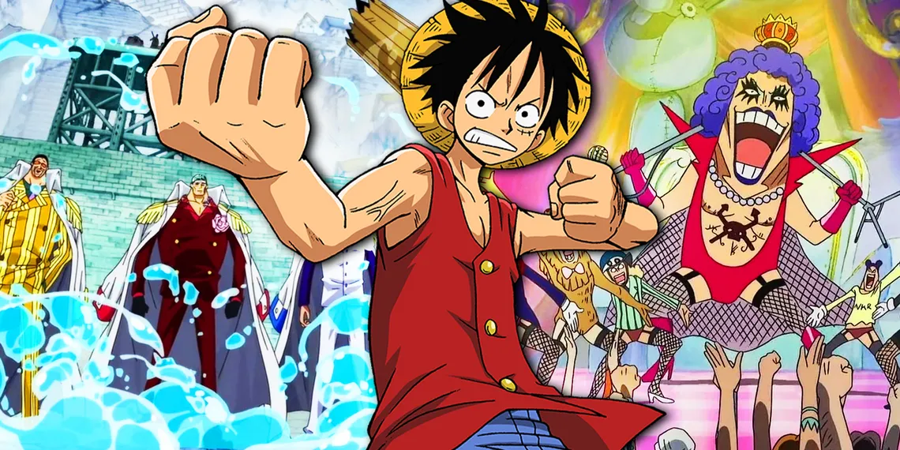

Main story arcs
MAIN STORY ARCS
When it comes to storytelling, Eiichiro Oda’s flagship series, One Piece, is nothing short of a masterpiece. Since 1997, the pirate-filled shonen has grown into one of the greatest, most-beloved stories of all time. After so many years of adventure, comedy, and fantastic fight scenes, there is no shortage of fan-favorite narrative arcs to choose from within the series.
For some fans, many of One Piece's best moments occur around the start of the show. Others claim that Monkey D. Luffy's adventures pick up steam as they go, resulting in higher-quality story arcs across the board during the series' second half. In reality, every One Piece arc has been a success since its inception, and its best sequences are spread throughout the entirety of its impressive 25-year syndication.
Updated on September 4th, 2023, by Kennedy King: One Piece has officially moved into what has been confirmed to be its final saga, placing Monkey D. Luffy within striking distance of his long-time goal — becoming the Pirate King. Because of these developments, more and more fans are reflecting upon the legacy left by each of the series' narrative arcs. While every one of these story arcs adds something to the series, there are a few that are still far superior to their peers.
Romance Dawn Arc
Every great shonen journey starts somewhere, and for Monkey D. Luffy and Roronoa Zoro, that somewhere is One Piece's Romance Dawn arc. During this brief One Piece arc (which comprises the show's first three episodes), Luffy makes his desire to become the Pirate King known far and wide, starting with his pink-haired acquaintance, Koby.
In addition to Luffy, viewers also receive their first glimpse of Roronoa Zoro during the Romance Dawn arc — the swordsman's iconic introduction in Shells Town is still a highlight of the series over two decades later. These massive character introductions get One Piece started on the perfect note, and for this reason alone, the Romance Dawn Arc deserves its laurels.
Syrup Village Arc
Although the formation of the Straw Hat Pirates technically occurs in One Piece's first episode, it isn't until the Syrup Village arc that the group finally starts to feel like a cohesive unit. By the end of their struggle against Kuro and the Black Cat Pirates, Luffy, Zoro, Usopp, and Nami are all firmly committed to one another as friends.
Kuro's dastardly plan to annihilate the inhabitants of Syrup Village forces the town's loudmouthed sniper to spring to action. Because of his courage, the Straw Hat Pirates defeat one of the East Blue's most heinous pirate crews. Despite being one of the shortest entries in the list of One Piece arcs, the events of Syrup Village are substantial enough to justify a rewatch for even the most die-hard fans.
Baratie Arc
When the Straw Hat Pirates arrive on Baratie, they are still in their infancy as a crew. Although Nami is traveling with them, Luffy, Usopp, and Zoro are the only concrete members. However, by the end of this One Piece arc, Sanji joins the crew, filling one of its most needed roles — cook.
Watching Sanji's backstory with the chefs of Baratie brings tears to the eyes of even the most seasoned fans. Despite its significance, the highlight of these episodes has to be the appearance of Dracule Mihawk. His actions demonstrate the ceiling of power in the world of One Piece while also providing an iconic character moment for Roronoa Zoro.
Arlong Park Arc
Most fans agree that the Arlong Park arc marks the moment when One Piece started to take off properly. Eiichiro Oda started to expand the One Piece world by introducing the concept of Fishmen and the Seven Warlords. It is also here that fans learn the truth about Nami's backstory, which as tragic as it is revealing.
Furthermore, this One Piece arc also features some of the highest stakes in the series at the time. With Nami's freedom and the lives of everyone in her hometown hanging in the balance, Luffy’s fight against the Arlong is packed with plenty of emotional intensity.
Loguetown Arc
The Loguetown Arc represents a bit of a juncture point for the Straw Hat Pirates. As their last stop in East Blue, Loguetown signals the true beginning of Monkey D. Luffy's journey as a pirate. There, he encounters characters like Monkey D. Dragon, Buggy the Clown, and Captain Smoker, eventually being placed in the same pillory as Gol D. Roger himself.
With its vast array of characters and attachment to the lore of One Piece, the Loguetown Arc foreshadows many elements of Luffy's journey across the Grand Line. Although the liminal nature of the Straw Hats' stop at Loguetown limits the arc's potential, it is still one of the best sequences in the entire series.
Reverse Mountain Arc
One Piece's Reverse Mountain Arc only consists of two episodes, but despite its brevity, it introduces multiple characters that will likely play a role in the series' final saga. Crocus, Laboon, and Nefertari Vivi all make their on-screen debut during this stretch, which officially signals the Straw Hat Pirates' entry into the Grand Line.
Laboon's attempt to break through the Red Line and reunite with the pirate crew that left him behind is a striking image, and given its connection to Brook's addition to the Straw Hat Pirates, it's easily one of the highlights of the Alabasta Saga. This, as well as Crocus' relationship to Gol D. Roger and Vivi's connection to the World Government, is a major reason why the Reverse Mountain Arc has aged like fine wine.
Whiskey Peak Arc
Bounty hunters are frequently mentioned throughout the One Piece timeline, yet it isn't until the Whiskey Peak Arc that they play any significant role on-screen. When the inhabitants of Whiskey Peak welcome the Straw Hat Pirates with open arms, none of the series' protagonists bat an eye. Unfortunately, these citizens turn out to be bounty hunters working for Baroque Works, introducing Luffy and his crew to the criminal syndicate.
Two of Baroque Works' strongest officers, Mr. 5 and Miss Valentine, show up during this arc, but Luffy and Zoro instantly prove that they are leaps-and-bounds stronger by quickly dispatching the pair. Shortly after, the Straw Hat Pirates commit to helping Nefertari Vivi return to Alabasta — a promise that eventually manifests in the crew's first fight against a Warlord of the Sea.
Diary Of Koby-Meppo
For the most part, the One Piece anime does not adapt the cover stories that appear in its manga. These narratives are usually brief, so they're not particularly well-suited for the anime medium. That being said, Koby and Helmeppo's entry into the Marines proved to be too important to the show's narrative, and as a result, it was included as a short mini-arc.
The Diary of Koby-Meppo Arc showcases the pair's early struggles in the Marines, reminding viewers that these two characters not to be forgotten. In addition, this One Piece arc introduces Monkey D. Garp — Monkey D. Luffy's grandfather and arguably the most famous Marine of all time.
Little Garden Arc
Of all the islands that decorate One Piece's Grand Line, none are more storied than Elbaf. The home of the giants is still yet to appear in the series, but thanks to adventures like the Little Garden Arc, the Straw Hat Pirates have gotten a taste of the island's warrior-like culture.
Dorry and Broggy are two giants that have been embroiled in a duel on the island of Little Garden for 100 years. Because of their determination and honorable nature, the pair immediately bond with the Straw Hat Pirates. However, their friendly interactions are cut short when Baroque Works interrupts their duel, earning the ire of Dorry, Broggy, and the entire Straw Hat crew.
Drum Island Arc
Every One Piece arc that results in a new member of the Straw Hat Pirates is extremely noteworthy, and the Drum Island arc is no exception. With Nami battling a life-threatening illness, Luffy and his crew arrive on Drum Island desperate for a doctor to join their ranks
Luckily for the Straw Hats, they encounter Tony Tony Chopper — a reindeer-turned-doctor determined to cure all the world's diseases. His touching backstory, the arc's despicable antagonist, Wapol, and the struggle of Drum Island's inhabitants all serve as the perfect backdrop for an addition to the Straw Hat Pirates
Alabasta Arc
With anticipation building since the Whiskey Peak arc, fans were eager to witness the conclusion of the Alabasta Saga. For the sake of their friend Princess Vivi Nefertari, the Straw Hats put everything on the line to save her country from the Warlord Crocodile.As the first person to ever beat Luffy in a fight, Crocodile quickly became one of the series' top villains and was responsible for making him push past his limits to become stronger. The conclusion of this One Piece saga also serves as the starting line where Luffy's infamous reputation begins to evolve as the World Government finally takes notice of him and his crew.
Jaya Arc
Although the Jaya arc effectively functions as a setup for the events of Skypiea, it's worth as a narrative should not be discounted. An entire slew of characters — Bartholomew Kuma, Bellamy, Blackbeard, Doflamingo, Mont Blanc Cricket, Sengoku, the Five Elders, and Whitebeard, to name a few — were introduced during this arc, making it one of the most jam-packed sequences in any One Piece saga.
Blackbeard and Monkey D. Luffy's conversations about chasing their dreams would be enough for this arc to warrant mention. However, the additional scenes involving the Straw Hat Pirates' conflict with Bellamy and the struggle of Mont Blanc Cricket solidify it as one of the best in the series.
Skypiea Arc
The Skypiea arc is one of the more underrated arcs in the series. It has all the elements necessary for a great adventure, as well as the most unique environment in the One Piece timeline. The Skypiea arc also reveals some vital information regarding the mysterious Poneglyphs. Towards the end of the arc, Robin finds one that not only reveals the identity of the Ancient Weapon Poseidon but also features a message from Gol D. Roger.
In it, the former Pirate King hints that the truth of the Void Century lies at Raftel, the final island of the Grand Line and the rumored location of the legendary treasure One Piece. Throw in a heart-wrenching narrative involving the Shandorians and Mont Blanc Noland, and this One Piece arc ranks among the best in the show.
Long Ring Long Land Arc
Smack in between two of One Piece's most beloved sagas lies the Long Ring Long Land Arc. Although it would be easy to write this arc off as filler, that's unfortunately not the case. The Long Ring Long Land Arc is remembered for many reasons, several of which highlight the sequence's shortcomings.
When the Straw Hat Pirates return from Skypiea, they almost immediately arrive at Long Ring Long Land and encounter the Foxy Pirates. What follows is a competition between the two crews that ultimately results in little change to either side, accomplishing little other than providing fans with a few cheap laughs before the Water 7 Saga.
Water 7 Arc
Many fans refer to the Water 7 and Enies Lobby arcs as the same, but technically, they are separate halves of a greater saga. Water 7 handles everything up to the Straw Hats' departure for Enies Lobby, and although it isn't quite as impactful as the story that follows, it still makes for one of One Piece's best arcs.
While in Water 7, the Straw Hat Pirates undergo some serious changes. Robin and Usopp each leave the crew for separate reasons, forcing Luffy to finally demonstrate his capacity to handle conflict among his crew. In addition to this, Franky is introduced to the series, resulting in one of the most Straw Hat-heavy sequences in their entire journey.
Enies Lobby Arc
In regard to One Piece's story arcs, many fans agree that the Enies Lobby arc is the best in the entire series. It features several memorable moments such as Nico Robin's tragic backstory, Franky destroying the blueprints for the Ancient Weapon Pluton, and even introduces Luffy's Gear Second and Third transformations.
Thriller Bark Arc
Thriller Bark is yet another of One Piece's underrated story arcs. Initially, it starts with a hilarious atmosphere full of classic One Piece gags. The situation quickly escalates as the Straw Hats unite to defeat the Warlord Gecko Moria and his giant zombie Oars
This arc is also popular for introducing the Straw Hats musician Brook and showcasing Roronoa Zoro's standoff against Bartholomew Kuma. In one of his greatest moments in the series, he prevents Kuma from killing Luffy by agreeing to take on all the pain he suffered in his fight with Moria — an act that nearly destroys him in the process
Sabaody Archipelago Arc
The Sabaody Archipelago is an emotionally gripping sequence that explores the darker themes of the series such as racism and slavery. It also introduces the Celestial Dragons, descendants of the founders of the World Government who wield absolute political power. After a Celestial Dragon shoots one of Luffy's friends and tries to enslave another, the Straw Hat pirate retaliates by punching him in the face
While this was undoubtedly a satisfying moment for many fans, it also resulted in the Straw Hats being targeted by Marine Admiral Kizaru. Not only did they experience the feeling of bitter defeat, but they also witnessed just how overwhelming the government's military power can be
Amazon Lily Arc
When the Straw Hat Pirates are forcibly separated by Bartholomew Kuma, each member of the crew is devastated by their loss. However, in the case of Monkey D. Luffy, he doesn't have time to bemoan his circumstances, and during the Amazon Lily Arc, he develops a plan of action to stop the impending execution of his brother, Portgas D. Ace
With the help of Boa Hancock and her followers, Luffy plans an infiltration of One Piece's most secure location, Impel Down. While the Amazon Lily Arc isn't very long, it's instrumental in setting up one of the most memorable One Piece sagas, Marineford.
Straw Hat's Separation Arc
As Monkey D. Luffy plans his jailbreak of Portgas D. Ace, the other members of the Straw Hat Pirates gather their bearings at various locations across the Grand Line. Each is sent to a location that is well-suited to their growth as pirates, and they spend the following two years developing their respective skills.
The Straw Hat's Separation Arc is interspersed throughout the Impel Down Arc; however, it's distinct enough to be considered its own narrative sequence. Zoro, Nami, Sanji, and the rest of the Straw Hat Pirates don't appear until after the One Piece timeskip, so their presence in this section is much appreciated
Impel Down Arc
The Impel Down arc begins with Luffy infiltrating the infamous Impel Down prison to save his brother Portgas D. Ace from execution. At first, his attempt fails following his defeat against warden Magellan. However, thanks to the interference of the revolutionary Emporio Ivankov and former enemy Mr. 2 Bon Clay, he survives and continues his mission to save Ace
Throughout the entire arc, Luffy demonstrates the full extent of his overwhelming ambition and charisma as he recruits new allies like Ivankov, former Warlord Jimbei, and even former enemies like Buggy the Clown and Crocodile. In the end, Luffy and his allies successfully escape Impel Down while also dealing a fatal blow to the World Government
Marineford Arc
The Marineford Arc serves as the conclusion to the first half of One Piece. It introduces some of the biggest names in the history of the One Piece timeline, and it also marks a major turning point for Luffy, who realizes just how outclassed he and his friends are against the New World's elite.
In the end, many fans are left grieving over the deaths of Ace and the legendary Emperor of the Sea, Whitebeard. In his final moments, Whitebeard announces the beginning of a new era by confirming the existence of the One Piece. Not only does the Marineford Arc mark the end of an era, but it also immortalizes Whitebeard as one of the greatest characters in anime history.
Post-War Arc
After the events of Marineford, the entire One Piece world is in shock. The Post-War arc details the fallout of Whitebeard's battle against the World Government while also launching the series toward the New Era, providing what is arguably the most important segue in the entire show
Jinbe and Blackbeard step down as Warlords of the Sea during this arc, but the biggest development has to be each Straw Hat Pirates' plan for the time skip. Seeing them prepare to train for two years without each other's company is a bittersweet sight that few fans will forget.
Return To Sabaody Arc
The Straw Hat Pirates' return to Sabaody Archipelago makes for one of the shortest arcs in One Piece. However, this sequence doesn't suffer whatsoever from its brevity, providing some of the most exciting reveals of any arc in the series post-timeskip
Each of the Straw Hats appears one by one during this arc, showing off their post-timeskip appearances. Their visual designs are stunning; however, they pale in comparison to the brief glimpses of power we see from each character. They all receive an opportunity to display their growth, making quick work of the Marines and Pacifistas located on the island.
Fish-man Island Arc
The Fish-man Island arc was initially supposed to happen before the time skip in One Piece. However, due to the Straw Hat Pirates separating at Sabaody, the events were postponed until after the two-year timeskip. After having Rayleigh coat their ship, the Straw Hat crew finally sets off for their adventure in the New World by going to Fishman Island.
The arc effectively tackles the important issues of the series such as racism and the poor treatment of Fish-men. Further, Monkey D. Luffy picks a fight with the Emperor of the Sea, Big Mom, after defeating Hody Jones. Arguably even more importantly, Nico Robin reveals Shirahoshi's identity as Poseidon.
Punk Hazard Arc
The Punk Hazard arc is one of the most iconic arcs in One Piece a reason. Not only does it mark the beginning of the Dressrosa Saga, but it also sets Luffy's battle against the Emperors of the Sea in motion. The arc sees Luffy and Trafalgar D. Law join forces and form a pirate alliance to take down one of the Grand Line's greatest pirates — Kaido.
Interestingly, fans also get to see Dr. Vegapunk's artificial Devil Fruits in action. Furthermore, the arc ensures that Dressrosa begins while firing on all cylinders as Vergo's death at the hands of Trafalgar Law causes Doflamingo to set out in chase of the alliance itself.
Dressrosa Arc
The Dressrosa arc serves as the first major challenge for Luffy and his crew since their arrival to the New World. It also reveals the history behind one of the strongest and most evil villains in One Piece — Donquixote Doflamingo. With his crew divided, Luffy allies himself with a group of pirates and warriors that suffered under Doflamingo’s brutal regime.
This arc also features the return of Luffy’s adoptive brother Sabo, as well as the introduction of his long-anticipated Gear Fourth transformation. By the conclusion of this One Piece arc, Luffy and his allies establish the Straw Hat Grand Fleet, a group that is will ultimately shake the very foundations of the world
Zou Arc
The Zou Arc follows Luffy and the Straw Hat Pirates' journey after the events of Dressrosa. This One Piece arc is rather short, but akin to Sabaody Archipelago, it is chock-full of material for fans to sort through. The appearance of Zunesha, the giant elephant that supports the island of Zou, is also vital to later events in the series.
The Zou arc marked the beginning of the One Piece's Emperor of the Sea Saga and revealed the concept of the Road Poneglyphs to the fans. The Pirate-Ninja-Mink-Samurai Alliance was formed, and Luffy set out with the Rescue-Sanji Party to recover his crewmate from the grasp of the Vinsmoke Family and the Emperor of the ea Big Mom
Whole Cake Island Arc
While it starts slow, the Whole Cake Island arc quickly builds in momentum as Luffy and his allies finally clash against the power of an Emperor of the Sea. The arc also reveals that Sanji is the prince of the Germa Kingdom, and explores his tragic and abusive upbringing
Unlike previous One Piece sagas, the Sanji Rescue Mission is not about whether the Straw Hats will win, but whether they will survive the wrath of Big Mom. As a result, fans can't help but feel concerned for the Straw Hats and whether they will all make it out alive. The excitement and anticipation build even further as Luffy faces off against Big Mom’s strongest son, Charlotte Katakuri, one of the toughest opponents he’s ever faced.
Reverie Arc
As the Sanji-Retrieval Team heads off to Wano Country having escaped from Big Mom's clutches, fans are shown several episodes covering the Reverie — a political meeting between many of the most important characters in the entire series. The history of the One Piece timeline is massively impacted by the decisions made at these gatherings, so the Reverie Arc provides crucial insight into the structure of the World Government
Interestingly enough, fans also get to see the Revolutionary Army commanders for the first time. Other than them, heaps of older characters are present at the meetup, each with different agendas in mind. The abolition of the Warlords of the Sea is eventually agreed upon, but most importantly, the King of World — Imu — is revealed as well.
Wano Country Arc
The Wano Country arc is finally nearing its end, and the conclusion of the Raid on Onigashima has sent ripples throughout the world of One Piece. Easily the largest arc in One Piece, the Ninja-Pirate-Mink-Samura Alliance's battle against Big Mom and Kaido slots among the greatest sequences in anime history.
Ace, Oden, Gol D. Roger, Kaido, Big Mom, Ryokugyu, Shanks, Yamato, the Straw Hat Pirates, and countless other characters appear during this One Piece arc, either directly or via flashbacks. While some are featured more than others, they all have quality moments in the spotlight — as expected of a group that liberated Wano from the control of the world's two most-wanted pirates.